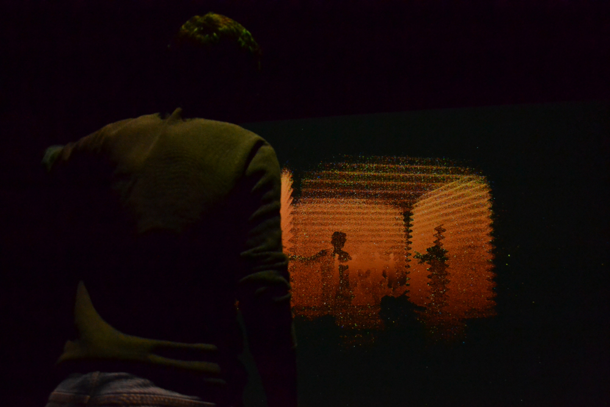
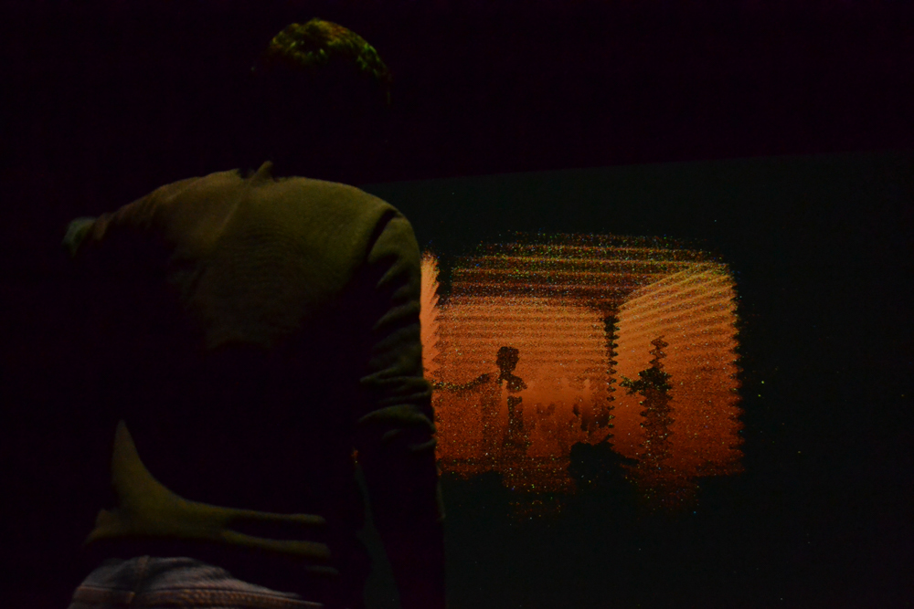

Obsidian is a cross-medium, user-generated interactive experience that manifests itself within a physical space and builds itself on the data of previous users. The abstract narrative of Obsidian, told entirely through visual language, aims to gain consent from the user to participate in an information-gathering process that stores their depth data, under the guise of a harmless and seductive interactive experience. The project touches upon modern norms of user data consent, lack of clarity of intent as well as big data and the versatility of its uses. The participant, ideally, would be brought to question the intent behind data-gathering technology paraded under the guise of fun, harmless interaction.
Visit the documentation website / development website.
Visit the documentation website / development website.
Valerie Bourdon
Motion graphics and project management
Ali Egseem
Sound design, analog post-processing, and video editing
Codrin Tablan Negrei
Interactive coding (Kinect) and shaders (Unity3D)
Motion graphics and project management
Ali Egseem
Sound design, analog post-processing, and video editing
Codrin Tablan Negrei
Interactive coding (Kinect) and shaders (Unity3D)


 
